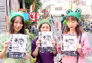
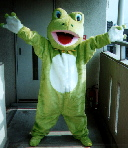
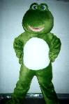
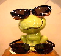
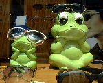
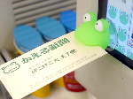
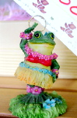

会場周辺に福岡かえる展ビラ！ 【福岡かえる展３実行委員会】開会まで１週間あまりに迫った福岡かえる展３。２６日は、会場周辺の大名の商店街にチラシを配りに行きました。
３年目ともなると、すでに承知している人が多く『今年もそんな季節になったなー』と、年中行事化しつつあります。

福岡かえる展にみんなのイラストを！【福岡かえる展３実行委員会】福岡に来たいけどこれない過エラーのために、今回は、『かえるイラスト展』を開催することにしました。みなさんの作品を、印刷出力してラミネート加工して会場で展示します。会期が終了したら、公式ポスターラミネート１枚に、自作分の５枚をセットで返送します。どんどん応募してくれー。

福岡かえる展会場用制服決まる！【福岡かえる展３実行委員会】かえる展会場で働くスタッフ用のＴシャツを作ることになりました。
会場の看板準備（５月２６日、２７日）、会場の設営（６月３日）、会期中（６月５日から１０日）に会場に詰めるスタッフには、優先的に製作しますので、いまのうちに決心していてくださいませー。
福岡公演を！謎のカエル着ぐるみ劇団！  【大阪発=着ぐるみ劇団様】はじめまして、着ぐるみ劇団の者ですが、劇団のかえるの着ぐるみ（2体）です。
【全国かえる奉賛会】すごい。ぜひぜひ福岡公演をやってほしいです。今年は、７月に前進座が福岡で、『かえる演劇』を予定しているんですよ。全員がカエルのきぐるみかぶってやるようで、カエル演劇がついに演劇界まで席巻しだしたのですー。
韓国カエルは眼鏡でバッチリ！  【韓国・全州市発=ケグリ同志記者】 韓国に全州という食べ物のおいしい都市があります．昨年から日本のＧＷ期間にぴったりあう時期に映画祭をやってるんで昨年も今年も行ってきました．で，昨年も今年も同じメガネ屋でメガネを作ったんですが（約７千円でけっこういいのが１時間もたたないうちに作れる），この店にはカエルの人形が飾ってあるんですね． 場所は全州市高士洞（コサドン）にある光明メガネコンタクトという店です(063-274-1123)．これを頼りに行く人なんていないと思いますが，高士洞には映画館が密集した「映画の街」という一帯があり，そこにある全州映画の碑からピカデリ劇場方面にちょっと行ったところです．
【全国かえる奉賛会】素晴らしい。目玉がぱっちりしているカエルは、眼鏡店にぴったしのキャラクターってことに、どうして今まで気がつかなかったんだろう！
 パソコン画面にカエルクリップ！【福岡発=サルト様】パソコンの画面に止めるペーパークリップです。なにかと便利ですよ。常にカエルと対しているので気分も和やかになります。【全国かえる奉賛会】さっそく愛用しています。カエルに名刺や、メモ紙などを加えてもらい、仕事を忘れないようにする優れものだ！まったくよく働くカエル首よのう。大王も、人様にいただいた大切な名刺や、上司から預かった大切な名刺を、このようにくわえていただいているのです。
店頭カエルを大募集！【東京発=K-net同志記者】東京からの準カエルマニアです。実は私、今月にリサイクルショップをオープンするのですが店頭ポップにカエルのキャラクター（イラスト＋コメント）を使用したいと思ってます。しかし、イラストのセンスはゼロに等しいです。（笑） どなたか、デザインもしくは画像などの協力をして頂けないでしょうか？
余裕はありませんが有料でも構いませんのでどうかよろしくお願いします。
 卵屋にハワイアンカエル！【福岡発=ぴのこ同志記者】飯塚の卵屋さんで、買い物をしていたときのことです。
商品展示していた棚に、踊るカエルハワイアンを発見。２５００円という、卵カステラの料金を掲げて踊っていました。店内には、ニワトリ関連グッズは、多かったのですが、カエルはここだけ。いったい誰がおいたんでしょうか。
投稿採用者に武功カエル徽章を授与！ |
かえる古新聞過去に取り上げた記事を見出し付きで一覧したい人は、ここをクリック◆創刊号を見る◆先週号を見る◆話題の号を見る◆かえる新聞の昔を読む◆COOL NET FROG RANKING !
|
私も入っています。。全国かえる奉賛会
大王様に会うには、このバナーをクリック。ずっと奥に写真館があるぞ。全国かえる奉賛会に入会するには、自分のホームページのどこかに、下の部分を追加するとバナーがリンク付きで表示されるぞ。どんどん入会しましょー |


|